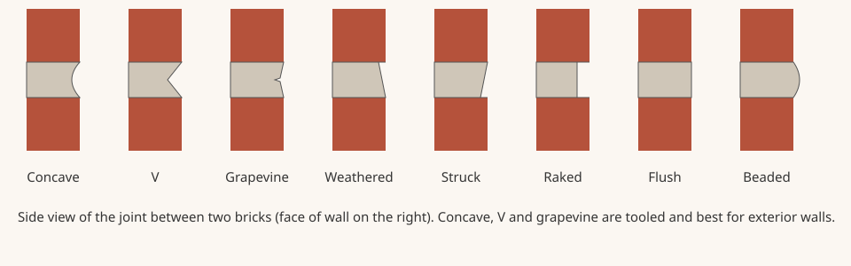

Mortar Smash › Trade guides › Mortar joint profiles
Short answer
For exterior brick, use a concave, V or grapevine joint. BIA Technical Note 7B says these tooled joints best resist water penetration because tooling presses the mortar against the brick and densifies the surface. Tool when the mortar is thumbprint hard. Raked, struck, flush, beaded, weathered and extruded joints are better kept to interior work or matched historic work.

The main joint profiles
| Profile | How it is formed | Weather resistance |
|---|---|---|
| Concave | Round jointer slightly wider than the joint | Best for exterior walls |
| V | V shaped jointer | Best for exterior walls |
| Grapevine | Jointer with a raised bead that leaves a fine groove | Good exterior choice |
| Weathered | Trowel, sloped out at the bottom | Interior or matched work per BIA |
| Struck | Trowel, sloped in at the bottom, leaving a ledge | Interior; the ledge holds water |
| Raked | Mortar raked back to a set depth | Interior; leaves a ledge and is not compacted |
| Flush | Cut off level with the face | Interior; not compacted |
| Beaded, extruded | Special tool or squeezed out mortar | Interior or decorative |
Source: joint guidance in BIA Technical Note 7B. Historic buildings are different: the NPS repointing brief says new pointing should match the original joint profile, colour and texture.
When to tool: the thumbprint test
Press your thumb into the joint. If it leaves an print but no mortar sticks to your thumb, the joint is thumbprint hard and ready to tool. BIA notes:
- Tooling too early smears mortar on the brick and leaves a rough joint, and early tooled joints dry lighter.
- Tooling too late means the surface cannot be compacted and bonded to the brick, and late joints look darker.
- The time to thumbprint hard changes through the day with sun, wind and brick suction, so check each section rather than working by the clock. Uniform timing gives uniform colour.
Cut squeezed out mortar from bed joints before tooling. Use a jointer slightly larger than the joint width.
Filling the joint matters as much as the profile
A tooled surface cannot fix a hollow joint. BIA recommends completely filling head and bed joints in exterior wythes, furrowing bed joints lightly if at all, and not slushing head joints (throwing mortar in afterwards), which leaves voids. Standard joint sizes are covered in mortar joint thickness.
Mortar joint profiles FAQ
What is the best mortar joint for exterior brick?
Concave, V or grapevine tooled joints. BIA Technical Note 7B says they best resist water penetration because tooling compacts the mortar against the brick.
Why are raked joints not recommended outside?
A raked joint is not compacted by a tool and leaves a small ledge on the brick below where water can sit, so it resists rain less well.
When should mortar joints be tooled?
When the mortar is thumbprint hard: your thumb leaves an impression but no mortar transfers to it.
Why are my mortar joints different shades?
Tooling time affects colour. Early tooled joints come out lighter and late tooled joints darker, so tool each area at the same stage of stiffness.
Sources
- BIA Technical Note 7B, Water Penetration Resistance: Construction and Workmanship
- National Park Service, Preservation Brief 2: Repointing Mortar Joints in Historic Masonry Buildings
Figures are quoted or condensed from the sources above. Codes and project specifications differ by country and job; where they conflict with this page, follow them.
Published 9 November 2026 by Mortar Smash. General information only, not engineering or code advice.